Block 8
Deskriptive Statistik
Hinweis: Verwenden Sie bei Ergebnissen mit Nachkommastellen als Dezimaltrennzeichen den Punkt (Bsp.: \(5.24\))
Aufgabe 1
- Bestimmen Sie das Skalenniveau der folgenden Merkmale:
1. Augenfarbe:
2. Telefonnummern:
3. Anzahl Operationen pro Monat:
4. Tumorausdehnung (mm):
5. Blutdruck:
6. Schmerzen (gering, mittel, hoch):
7. Intelligenzquotient:
- Augenfarbe \(\rightarrow\) Nominalskala
- Telefonnummern \(\rightarrow\) Nominalskala
- Anzahl Operationen pro Monat \(\rightarrow\) Verhältnisskala
- Tumorausdehnung (mm) \(\rightarrow\) Verhältnisskala
- Blutdruck \(\rightarrow\) Verhältnisskala
- Schmerzen (gering, mittel, hoch) \(\rightarrow\) Ordinalskala
- Intelligenzquotient \(\rightarrow\) Ordinalskala
Aufgabe 2
Es wird eine Studie geplant, bei dem die Wirkung eines Medikaments auf den systolischen Blutdruck bei der Hypertonie untersucht werden soll.
Ordnen Sie den Begriffen die entsprechenden Oberbegriffe zu.
Begriffe:
- Patient Müller
- 180 mmHg
- Blutdruck
- Menge aller hypertonen Patienten
- Hypertonie
Oberbegriffe:
- Beobachtungseinheit
- Grundgesamtheit
- Merkmal
- Ausprägung
Wählen Sie zu jedem Begriff den passenden Oberbegriff:
1. Patient Müller:
2. 180 mmHg:
3. Blutdruck:
4. Menge aller hypertonen Patienten:
5. Hypertonie:
- Patient Müller \(\rightarrow\) Beobachtungseinheit
- 180 mmHg \(\rightarrow\) Ausprägung
- Blutdruck \(\rightarrow\) Merkmal
- Menge aller hypertonen Patienten \(\rightarrow\) Grundgesamtheit
- Hypertonie \(\rightarrow\) kein passender Oberbegriff aus der Liste
Aufgabe 3
- Welche der folgenden Merkmale sind qualitativ und welche quantitativ?
1. Herzfrequenz:
2. Schlaganfall:
3. Blutgruppe:
4. Zufriedenheit:
5. BMI:
6. Nüchternblutzucker:
7. Infektion:
Qualitativ:
2. Schlaganfall (ja/nein)
3. Blutgruppe (A, B, AB, 0)
4. Zufriedenheit (z.B. niedrig, mittel, hoch)
7. Infektion (ja/nein)Quantitativ:
1. Herzfrequenz
5. BMI
6. Nüchternblutzucker
Lage- und Streuungsmaße
Aufgabe 1
Bestimmen Sie Mittelwert und Median der folgenden Cholesterinwerte (mg/dl):
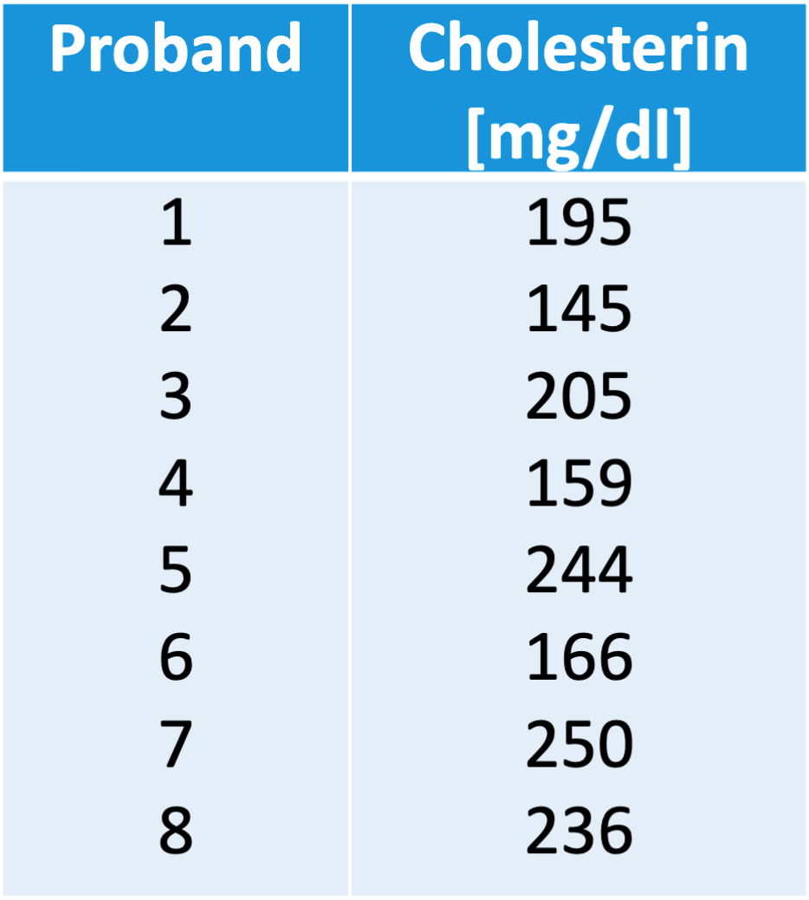
Wie ändern sich Mittelwert und Median, wenn ein 9ter Proband mit einem Cholesterinwert von 110 mg/dl dazukommt?
Für n = 8:
Mittelwert:
Median:
Für n = 9:
Mittelwert:
Median:
Für \(n=8\):
\[ \bar{x} = \frac{1}{8}(195 + 145 + 205 + 159 + 244 + 166 + 250 + 236) = 200 \]
Geordnet: \(145, \;159, \;166, \;195, \;205, \;236, \;244, \;250\)
\[ \tilde{x} = \frac{1}{2}(x_{(4)} + x_{(5)}) = \frac{1}{2}(195 + 205) = 200 \]
Mit dem zusätzlichen Wert \(110\) gilt für \(n=9\):
\[ \bar{x} = \frac{1}{9}(195 + 145 + 205 + 159 + 244 + 166 + 250 + 236 + 110) = 190 \]
Geordnet: \(110, \;145, \;159, \;166, \;195, \;205, \;236, \;244, \;250\)
\[ \tilde{x} = x_{(5)} = 195 \]
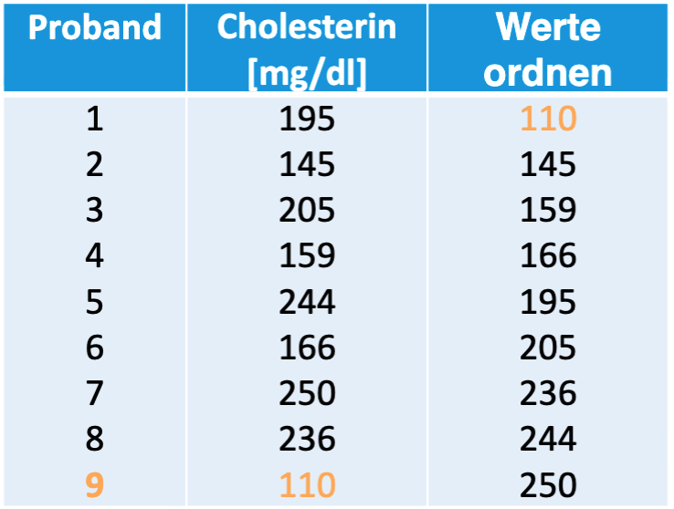
Aufgabe 2
- Bestimmen Sie das 0.2-Quantil- 0.8-Quantil der folgenden Werte.
Das 0.2-Quantil lautet:
Das 0.8-Quantil lautet:
Geordnete Werte: \(145, \;159, \;166, \;195, \;205, \;236, \;244, \;250\)
Für das \(0.2\)-Quantil:
\[ \alpha \cdot n = 0.2 \cdot 8 = 1.6 \Rightarrow k = 2 \]
\[ \tilde{x}_{0.2} = x_{(2)} = 159 \]
Für das \(0.8\)-Quantil:
\[ \alpha \cdot n = 0.8 \cdot 8 = 6.4 \Rightarrow k = 7 \]
\[ \tilde{x}_{0.8} = x_{(7)} = 244 \]
Graphische Darstellung
Aufgabe 1
Ordnen Sie zu den Histogrammen die folgenden Begriffe zu:
Histogrammen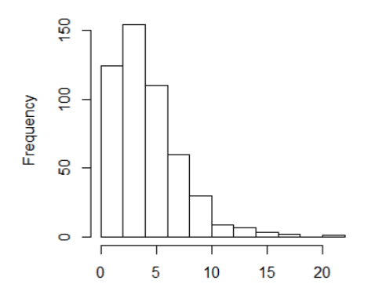
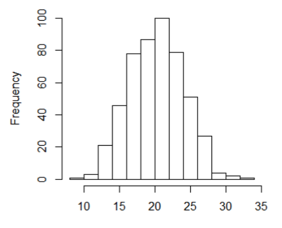
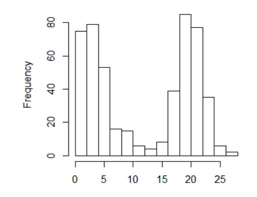
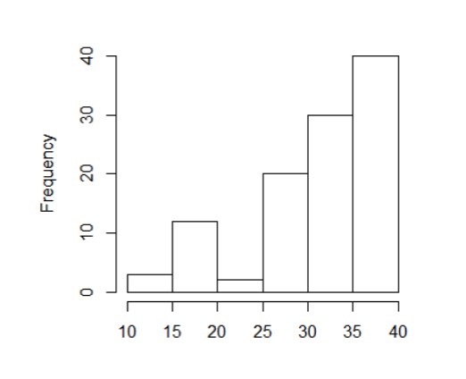
Begriffe
- Rechtsschief
- Linksschief
- Multimodal
- Unimodal
- Rechtssteil
- \(\bar{x} > \tilde{x}\)
- \(\bar{x} \approx \tilde{x}\)
| Histogramm | Begriffe | Beschreibung |
|---|---|---|
| 1 | b, e, f | rechtsschief, unimodal, \(\bar{x} > \tilde{x}\) |
| 2 | c | multimodal |
| 3 | b, d, e | linksschief, unimodal, rechtssteil |
| 4 | d, g | unimodal, \(\bar{x} \approx \tilde{x}\) |
Aufgabe 2
Bestimmen Sie Median und \(0.8\)-Quantil für das Merkmal BBS score bei \(n=100\) mit folgender Häufigkeitstabelle:
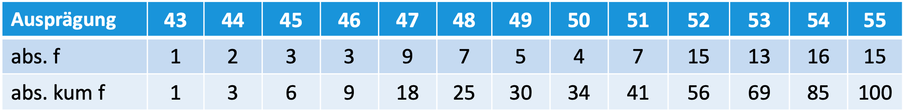
Median \((\tilde{x}_{0.5})=\)0.8-Quantil \((\tilde{x}_{0.8})=\)
Median = \(0.5\)-Quantil:
\[ 0.5 \cdot 100 = 50 \]
Da dies eine ganze Zahl ist, gilt:
\[ \tilde{x} = \frac{x_{(50)} + x_{(51)}}{2} \]
Aus den kumulativen Häufigkeiten liegt sowohl der 50. als auch der 51. Wert bei 52, also:
\[ \textbf{Median}(\tilde{x}_{0.5}) = 52 \]
Für das \(0.8\)-Quantil:
\[ 0.8 \cdot 100 = 80 \]
Da auch dies eine ganze Zahl ist, gilt:
\[ \tilde{x}_{0.8} = \frac{x_{(80)} + x_{(81)}}{2} \]
Beide Werte liegen bei 54, also:
\[ \textbf{0.8-Quantil} (\tilde{x}_{0.8}) = 54 \]
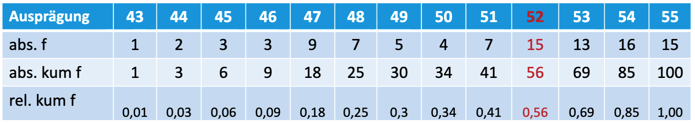
Aufgabe 3
Bei einem Boxplot der BMI-Verteilung von \(n=21\) Probanden sollen folgende Kennwerte abgelesen werden:
BMI-Verteilung: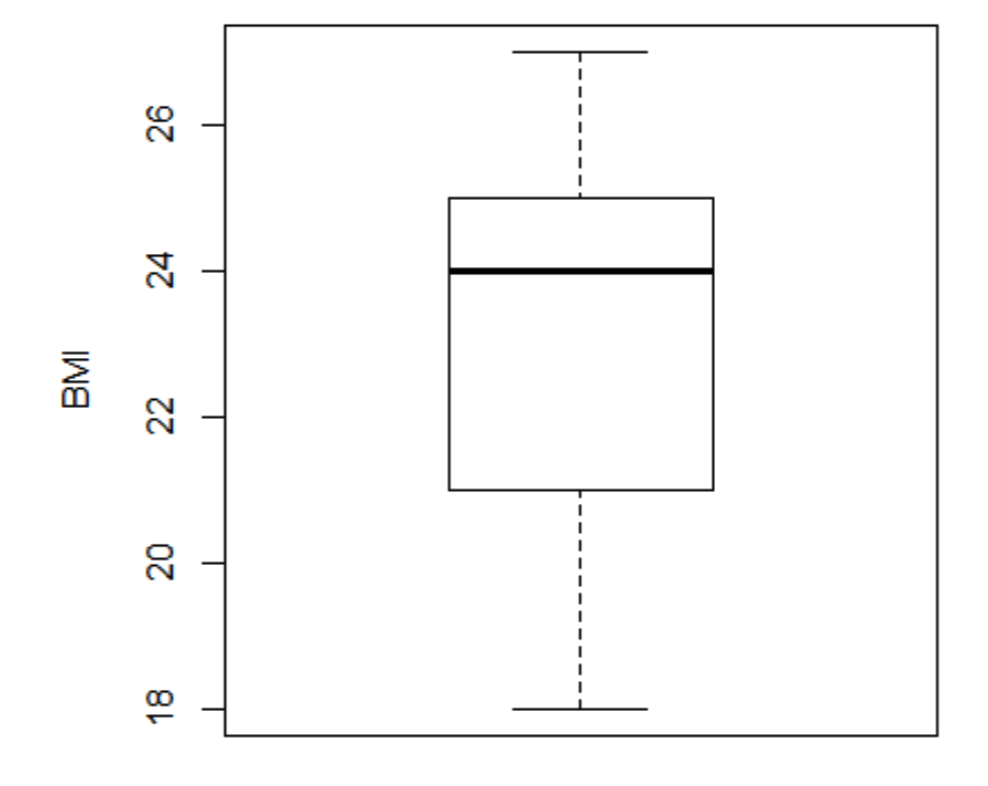
Kennwerte:Kennwert Wert Median Q1 Q3 IQA Range
- Median \(= 24\)
- \(Q1 = 21\)
- \(Q3 = 25\)
- IQA \(= Q3 - Q1 = 4\)
- Range \(= 27 - 18 = 9\)
Korrelation, Lineare Regression
Aufgabe 1
Gegeben ist folgende Kovarianzmatrix (n=100):
\[\begin{pmatrix}
S_{x}^{2} & S_{xy} \\
S_{xy} & S_{y}^{2}
\end{pmatrix}
=
\begin{pmatrix}
7.6 & 4.5 \\
4.5 & 3.4
\end{pmatrix}
\]
- Berechnen Sie den Korrelationskoeffizienten. Geben Sie das Ergebnis mit zwei Nachkommastellen an.
Korrelationskoeffizient \(=\)
Gegeben ist die Kovarianzmatrix
\[\begin{pmatrix} 7.6 & 4.5 \\ 4.5 & 3.4 \end{pmatrix} \]
Der Korrelationskoeffizient ist
\[ r_{xy} = \frac{4.5}{\sqrt{7.6 \cdot 3.4}} = 0.88 \]
- Wie interpretieren Sie das Ergebnis?
- Interpretation: hoher positiver Zusammenhang.
Übungen Rangkorrelation
Aufgabe 1
Gegeben sind folgende Messwerte von \(n = 8\) Patienten:
- Merkmal \(X\) = TUG [s]
- Merkmal \(Y\) = FES-I-Score
Notiz: Merkmale sind mind. ordinalskaliert.
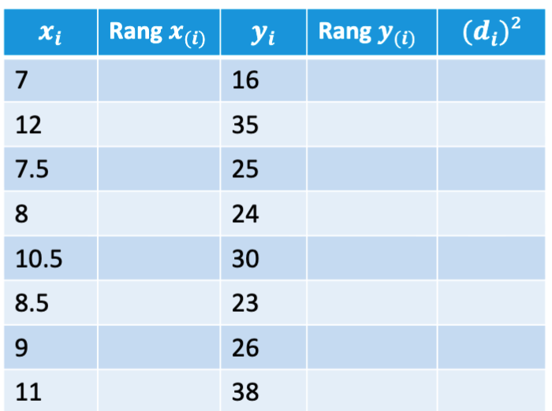
Schritt 1: Vergeben Sie die Ränge für \(x_i\) und \(y_i\).
\(x_i\) Rang \(x_{(i)}\) \(y_i\) Rang \(y_{(i)}\) 7 16 12 35 7.5 25 8 24 10.5 30 8.5 23 9 26 11 38
Schritt 2: Berechnen Sie \((d_i)^2 = (\text{Rang}\, x_i - \text{Rang}\, y_i)^2\) für jede Zeile.\(x_i\) Rang \(x_{(i)}\) \(y_i\) Rang \(y_{(i)}\) \((d_i)^2\) 7 1 16 1 12 8 35 7 7.5 2 25 4 8 3 24 3 10.5 6 30 6 8.5 4 23 2 9 5 26 5 11 7 38 8
Schritt 3: Berechnen Sie die Summe \(\sum (d_i)^{2} =\)Schritt 4: Berechnen Sie die Rangkorrelation nach Spearman (Ergebnis auf zwei Nachkommastelle runden):
\[\rho = 1 - \frac{6 \cdot \sum d_i^2}{n(n^2 - 1)}\]
\(\rho =\)
\(x_i\) Rang \(x_{(i)}\) \(y_i\) Rang \(y_{(i)}\) \((d_i)^2\) 7 1 16 1 0 12 8 35 7 1 7.5 2 25 4 4 8 3 24 3 0 10.5 6 30 6 0 8.5 4 23 2 4 9 5 26 5 0 11 7 38 8 1 \[\sum (d_i)^2 = 10\]
\[\rho = 1 - \frac{6 \cdot 10}{8 \cdot (64 - 1)} = 1 - \frac{60}{504} \approx 0.88\]
Es besteht ein starker positiver Zusammenhang zwischen TUG und FES-I-Score.
Aufgabe 2
Teriparatide ist ein Medikament, welches die Aktivität in den Osteoblasten erhöht und somit die Knochenheilung anregt. In einer klinischen Studie wurde an \(n = 100\) Frauen mit osteoporotischer Beckenfraktur untersucht, ob es einen Zusammenhang zwischen dem Alter [Jahren] und der Frakturheilung (Zeit [Wochen]) gibt unter Gabe von Teriparatide.
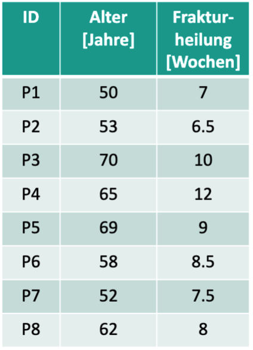
Hinweis: Dies ist nur ein Datenausschnitt, damit Sie dies per Hand rechnen können. Bei \(n = 100\) und quantitativen, normalverteilten Merkmalen kann der Pearson-Korrelationskoeffizient \(r\) berechnet werden. Bei kleinen Stichproben würde man ansonsten eher den Rangkorrelationskoeffizienten berechnen.
Untersuchen Sie für diesen Ausschnitt von den Daten den Zusammenhang.
Schritt 1: Welches Skalenniveau haben die Merkmale?
Schritt 2: Berechnen Sie die Mittelwerte (Ergebnis auf eine Nachkommastelle runden).
\(\bar{x} =\) \(\bar{y} =\)
Schritt 3: Berechnen Sie die Standardabweichungen (Ergebnis auf eine Nachkommastelle runden).
\(s_x =\) \(s_y =\)
Schritt 4: Berechnen Sie die Kovarianz (Ergebnis auf eine Nachkommastelle runden).
\[s_{xy} = \frac{1}{n-1} \sum_{i=1}^{n}(x_i - \bar{x})(y_i - \bar{y})\]
\(s_{xy} =\)
Schritt 5: Berechnen Sie den Pearson-Korrelationskoeffizienten (Ergebnis auf zwei Nachkommastelle runden).
\[r_{xy} = \frac{s_{xy}}{s_x \cdot s_y}\]
\(r_{xy} =\)
Die Merkmale sind intervallskaliert → Pearson-Korrelation wird verwendet.
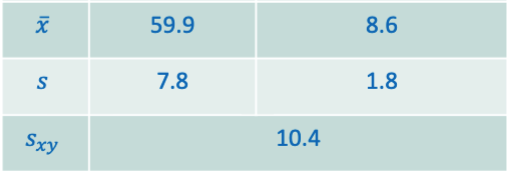
\[r_{xy} = \frac{s_{xy}}{s_x \cdot s_y} = \frac{10.4}{7.8 \cdot 1.8} = 0.75\]
Es besteht ein starker positiver linearer Zusammenhang zwischen dem Alter und der Frakturheilungszeit.
Aufgabe 3
Teriparatide ist ein Medikament, welches die Aktivität in den Osteoblasten erhöht und somit die Knochenheilung anregt. In einer klinischen Studie wurde an \(n = 100\) Frauen mit osteoporotischer Beckenfraktur untersucht, ob es einen Zusammenhang zwischen dem Alter [Jahren] und der Frakturheilung (Zeit [Wochen]) gibt unter Gabe von Teriparatide.
Wie stellt sich der Zusammenhang dar, wenn man eine Kategorisierung des Alters und der Dauer der Frakturheilung vornimmt?
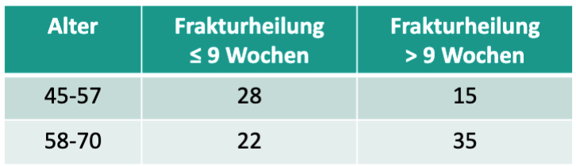
\(\varphi =\)
(Ergebnis auf zwei Nachkommastellen runden)
Da beide Merkmale kategorisiert (dichotom) vorliegen, wird der Vierfelderkoeffizient \(\varphi\) verwendet.
Alter Frakturheilung \(\leq 9\) Wochen Frakturheilung \(> 9\) Wochen 45–57 \(a = 28\) \(b = 15\) 58–70 \(c = 22\) \(d = 35\) \[\varphi = \frac{28 \cdot 35 - 15 \cdot 22}{\sqrt{43 \cdot 57 \cdot 50 \cdot 50}} = \frac{980 - 330}{\sqrt{6\,149\,250}} = \frac{650}{2\,479.8} \approx 0.26\]
Aufgabe 4
- Zeichnen Sie eine Gerade ein, die die Daten repräsentiert.
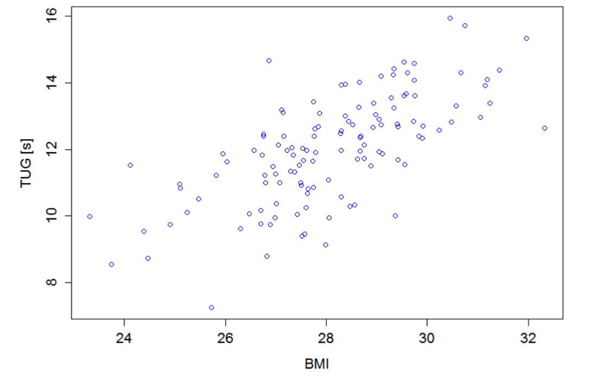
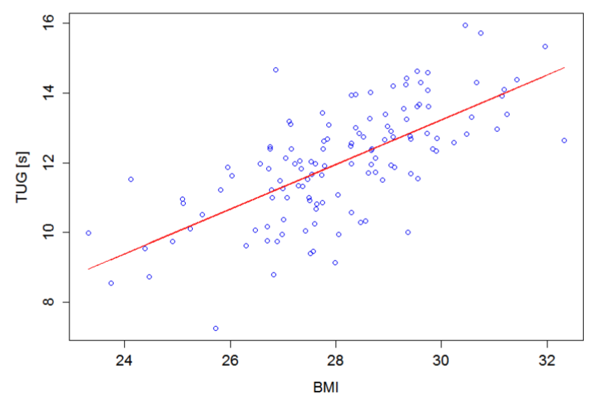
- Bestimmen Sie (Zwei-Punkte Form) die Gleichung dieser Geraden.
Beispiel mit den Punkten \((x_1, y_1) = (27;\ 11.4)\) und \((x_2, y_2) = (28;\ 12)\):
Steigung: \[m = \frac{12 - 11.4}{28 - 27} = \frac{0.6}{1} = 0.6\]
y-Achsenabschnitt: \[b = -0.6 \cdot 27 + 11.4 = -4.8\]
Geradengleichung: \[f(x) = 0.6 \cdot x - 4.8\]
Hinweis: Sie werden wahrscheinlich andere Punkte gewählt haben und erhalten daher eine leicht abweichende Lösung. Um die beste Gerade für die Daten zu finden, verwendet man die Methode der kleinsten Quadrate.
Aufgabe 5
Der Zusammenhang zwischen Adiponectin und BMI soll untersucht werden.
Hintergrund: Adiponectin stimuliert die Fettsäureoxidation in Muskeln und Leber und führt zu einer Verbesserung der Insulinsensitivität. Bei adipösen Patienten ist die Plasmakonzentration von Adiponectin erniedrigt. Vermutet wird eine negative Korrelation mit dem BMI.
Gegeben sind Daten von \(n = 10\) Probanden sowie folgende Maße:
\[\bar{x} = 28.6, \quad \bar{y} = 13.7, \quad s_x = 1.51, \quad s_y = 2.19, \quad s_{xy} = -2.99\]
- Fertigen Sie eine Punktewolke zu den Daten an. Anschließend bestimmen Sie die Gleichung der Regressionsgerade und zeichnen Sie diese in das Diagramm.
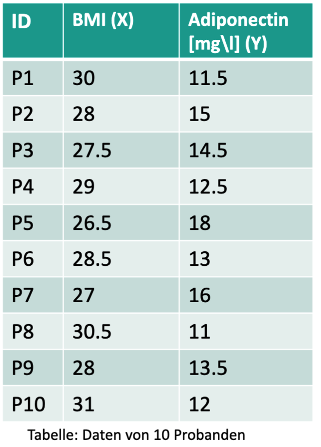
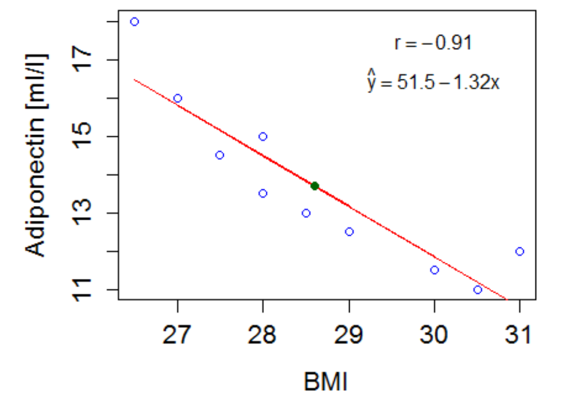
Regressionsgeraden:
\[m = \frac{s_{xy}}{s_x^2} = \frac{-2.99}{1.51^2} = -1.31\]
\[b = \bar{y} - m \cdot \bar{x} = 13.7 - (-1.31) \cdot 28.6 = 51.2\]
Notiz: Mittelwert in allg. Geradengl. einsetzen und b bestimmen \(\Rightarrow y = m \cdot x + b \;\;\text{d.h.}\;\; b = y - m \cdot x\) Mittelwert liegt auf der Geraden.
- Gibt es einen negativen Zusammenhang? Berechnen Sie die Korrelation.
\(r_{xy} =\)
Korrelation:
\[r_{xy} = \frac{s_{xy}}{s_x \cdot s_y} = \frac{-2.99}{1.51 \cdot 2.19} = -0.904\]
\(\Rightarrow\) Starke negative Korrelation zwischen BMI und Adiponectin.
- Bestimmen Sie das Bestimmtheitsmaß und deuten Sie das Ergebnis (Ergebnis auf zwei Nachkommastellen runden).
\(R^2 =\)
Bestimmtheitsmaß: \[R^2 = (-0.904)^2 = 0.81\]
\(\rightarrow\) 82% der Variabilität der Adiponectin-Werte kann durch den BMI erklärt werden.